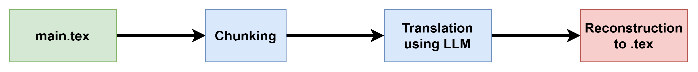

LaTeX Chunking & Translation
This project provides a Python-based pipeline for processing LaTeX documents. It splits LaTeX files into structured chunks by \section, \subsection, and \subsubsection, preserves LaTeX commands, and allows translation of textual content using LLMs while keeping math, citations, and formatting intact.
Key Contributions:
- Developed a chunking system that maintains LaTeX structure for sections, subsections, and subsubsections.
- Implemented a safe translation workflow for LLMs to translate content without breaking LaTeX commands or math formulas.
- Created a reconstruction script to merge translated chunks back into a fully compilable LaTeX document.
- Prepared JSON-based chunking output for easy integration with translation models or automation pipelines.
Outcome:
This project makes it simple to translate academic papers or LaTeX documents into multiple languages while preserving formatting and structure. It demonstrates capabilities in Python scripting, text processing, and LLM-assisted workflows.
GitHub: Github Project

Pipeline: Chunking → Translation → Reconstruction